概要
「画像内のprimitiveを認識できることは高次の特徴を掴んでいる」という考えを基にした、self-supervisedな特徴表現学習手法。 画像のオリジナルとそれらを各タイルに分割したものを同じNNに入力し、出力されるタイルのprimitive数の和とオリジナルのprimitive数が一致するように学習する。 しかしそれでは出力を単に小さくするように学習することで損失を０にできてしまうので異なる画像も含めたcontrastiveな損失を用いる。
「画像内のprimitiveを認識できることは高次の特徴を掴んでいる」という考えを基にした、self-supervisedな特徴表現学習手法。 画像のオリジナルとそれらを各タイルに分割したものを同じNNに入力し、出力されるタイルのprimitive数の和とオリジナルのprimitive数が一致するように学習する。 しかしそれでは出力を単に小さくするように学習することで損失を０にできてしまうので異なる画像も含めたcontrastiveな損失を用いる。
画像識別、物体検出、意味領域分割などのタスクで評価を行っており、識別ではSoTA。 学習したNNからの出力を確認すると、ノルムが大きいものは高次な物体が含まれる画像、小さいものは低次なテクスチャしか含まない画像が得られた。 これからNNが高次なprimitiveをcountしていることが考察できる。
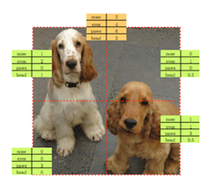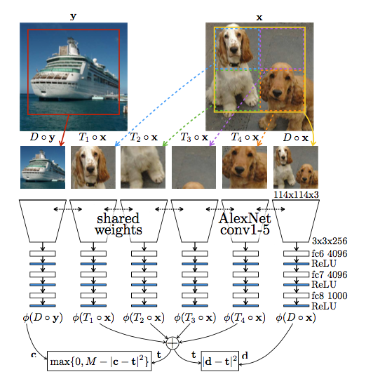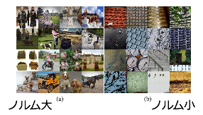
アルバムのような時系列画像でキャプション生成を行うためのデータセット。ストーリ性のある画像キャプションデータセット：SINDを構築。10,117個のFlickrアルバム、210,819枚の写真。各アルバムは平均20.8枚。
descriptions for images in isolation (DII)：画像一枚の記述
descriptions of images in sequence (DIS)：連続画像
stories for images in sequence (SIS)：ストーリー
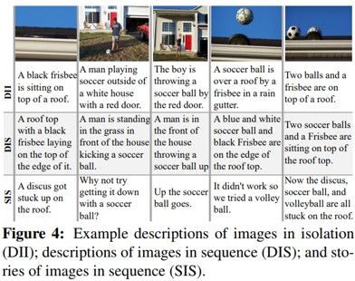
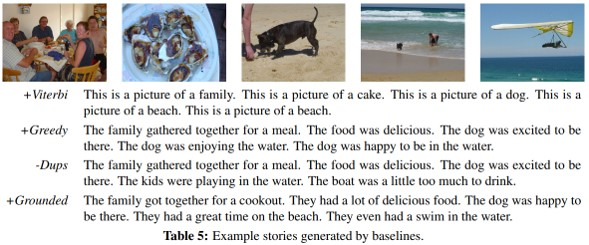
理由に基づいたVQA。既存の手法では，入力を出力に直接マッピングしているため，視覚的推論の学習というよりも，データの偏りを学習しているといえる。そこで，理由を伴った視覚的推論モデルを提案。モデルは、プログラムジェネレータと実行エンジンの2部構成。CLEVRベンチマークを使用し評価。回答の柔軟性、拡張性の向上。
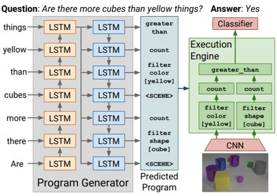
プログラムジェネレータは、質問の読み取り、単語の羅列として表現される質問から質問に答えるためのプログラムを生成する。基本的にはLSTMのsequence-to-sequenceの考え方。
実行エンジンは、予測されたプログラムをミラーリングするニューラルモジュールネットワークを構成し、実行することで画像から回答を生成。
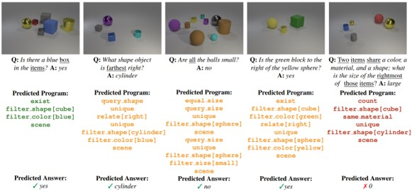
教師モデルと生徒モデルを分けていた従来の蒸留に対してモデル同士の相互学習を提案。ハードラベルによる交差エントロピーと対象モデル以外のモデルの出力とのKL距離を最小化するように学習する。様々なモデル同士の相互学習実験や通常の蒸留との比較、相互学習を行った場合の解がより高い汎化性能を保有していることの検証実験も行っている。
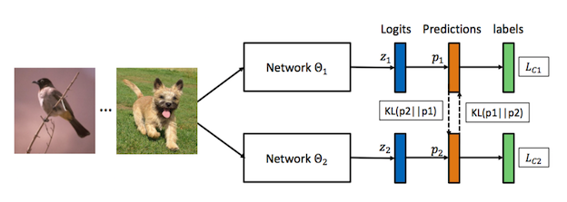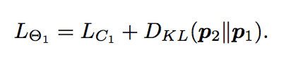
画像識別において通常の蒸留を行うよりも精度が良くなった。生徒モデルの中で相対的に小規模なモデルのみならず大規模なモデルも独立で学習を行うより精度が良かった。さらに相互学習を行うことで、wider minimaに収束しているという実験結果萌えたれた。特に出力される事後確率のエントロピーが大きくなるように学習されることがwider minimaへの収束を促していることがいわれている。
動き特徴を利用した前景（物体）領域情報は汎用的な表現学習に役立つという考えから、NLCなどのhand-craftな手法を組み合わせて擬似的な動体領域を作成し、それを教師として領域分割をCNNに解かせることで表現特徴を得る。物体検出、物体・行動認識、意味領域分割の問題設定において評価を行った。表現学習のデータとしてYFCCを用いている。
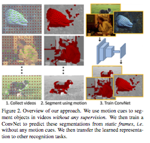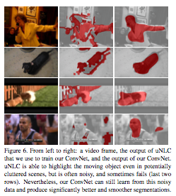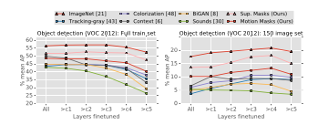
Pascal VOCの物体検出において教師なし表現学習でSoTA。特にfine-tuningに利用するデータが少量の場合と多くの層のパラメータを固定してfine-tuinigした場合で大きな効果を発揮した。しかし、物体・行動認識、意味領域分割においては従来手法より劣っている。
実験は丁寧に行われてる印象。表現学習の設定自体が物体検出を意識しているようにも感じられ（単一物体が写っている画像を優先的に取り出している？など）、物体検出でうまくいくのは当たり前な気もした。
しかし、意味領域分割で精度が出ない原因がよくわからなかった（物体部分はできているが背景の分割ができていない？）。1-stage物体検出手法の精度向上を図る。 YOLOやSSDなどは，矩形領域における前景と背景の面積が不均衡であるため，2-stage物体検出手法に勝てないと推測。この問題を解決するためにクロスエントロピーを再構築したFocal Lossを提案。学習時のネガティブサンプルの影響を減らすことができる。
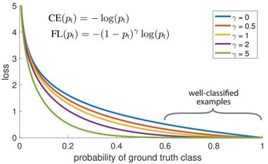
Focal Loss
クロスエントロピーに重みを追加
→正解になりやすい背景に引っ張られなくなる
画像キャプショニングの性能向上を図る。従来のロバスト性が低いRNNに代わって，GANのフレームワークを採用することで，自然性と多様性を向上。図より，ジェネレータ(G)が文を生成し，ディスクリミネータ(E)が文や段落がどれだけうまく記述されているかを評価する。GとEを同時に学習させることにより，自然な文章を生成。
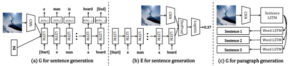
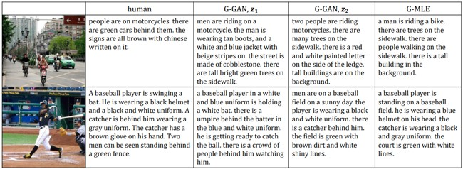
ラベルが完全に手に入らない際にでも転移学習が可能なセグメンテーション手法（論文中ではPartially Supervised Training Paradigm, weight transfer functionを紹介）を提案する。条件として、bboxが手に入っている物体に対してセグメンテーション領域を学習可能。Mask R-CNNをベースとしているが、Weight Transfer Functionを追加、セグメントの重みを学習・推定して誤差計算と学習繰り返し。
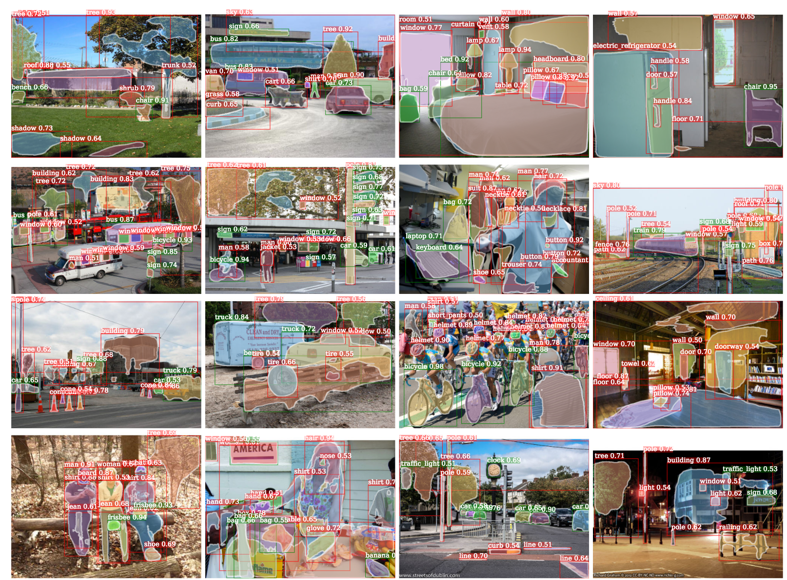
Visual Genome Datasetから3,000の視覚的概念を獲得、MSCOCOから80のマスクアノテーションを獲得した。
弱教師付き学習が現実的な精度で動作するようになってきた？アノテーションはお金や知識があっても非常に大変なタスクであり、いかに減らすかという方向に研究が進められている。（What's next?ー弱教師/教師なしの先とは？）
ワンショットで人間の教示を模倣するロボットのための学習「One-shot Imitation Learning」を提案。人間が物体を把持するなど動作を教示するとロボットが特徴や動作を学習してタスクをこなす様子を学習。Model-Agnostic Meta-Learning（MAML; ICML2017）を応用したモデルを提案し、（VR空間、人間のデモによる）教示から動作を学習する。アーキテクチャはCNNをベースとしてRGB入力から特徴を抽出、中間層（全結合層直前）からロボットの動作やバイアス項を入力してロボットの行動（pre-/post-update）を出力する。
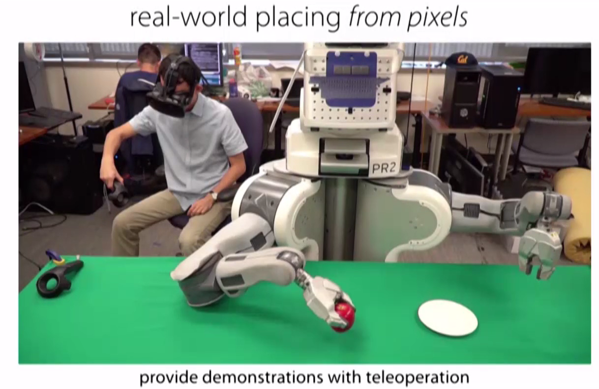
ロボットの把持タスクをシミュレーション/実空間にておこなった。シミュレーションでは提案法のMILが1ショットで85.81%、5ショットで88.75%（従来法LSTMでは各78.38%, 83.11%）。実空間では90%を実現（従来法LSTM/contextualでは25%）。詳細にはプロジェクトページやプレゼンのビデオを参照。
CVにおけるデータセットでは，写真に対するラベル付けが一般的。写真だけでなく，イラストや風景画などに対して，以下の3属性のラベルを付加。
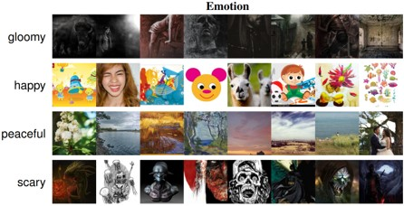
Behance Artistic Media Dataset
物体検出とアフォーダンス（というよりは機能？）のセグメントを同時に回帰するネットワーク、AffordanceNetに関する論文。ロボットへの把持位置/機能教示を行うことができる。基本的なモデルはMask R-CNNを適用していて、物体検出のためのbboxと物体に対する機能セグメントを正解として学習する。多タスクの誤差関数は物体カテゴリ、座標、機能セグメントの3つに関するものである。
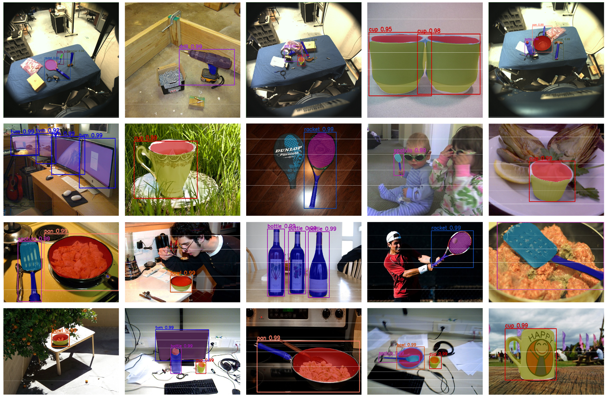
従来、物体検知と機能推定は別個に学習・認識されていたが、本研究では多タスク学習の枠組みで、単一モデルにてEnd-to-End学習した。IIT-AFF Datasetにて73.35（SoTAは69.62）、UMD Datasetにて79.9（SoTAは77.0）。モデルも公開されており、誰もがAffordanceNetを実装できるようにしている。
画像識別における知識蒸留（Knowledge Distillation）の内容である。本論文ではある概念（e.g. 動物認識、人工物認識）ごとに教師となる識別器を事前学習しておき、それらの知識を単一の識別器に学習（これをKnowledge Concentrationと呼称）する。いわば複数の先生がある生徒に教えるという流れで学習する。
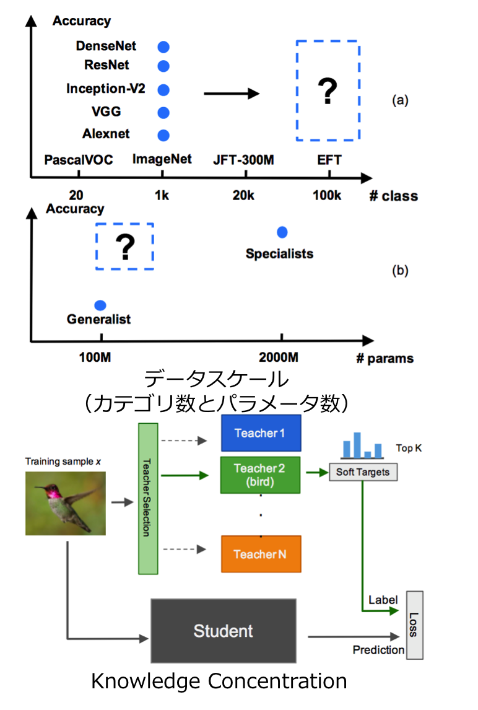
よくも悪くも、現状のCVはImageNetの1,000カテゴリに頼っているが、これを100倍の100,000カテゴリに増やして学習したらどうか？また、いかにしたら効率よく学習ができるかを検討した。結果はSingle Model（従来のようなCNNによるカテゴリ識別学習）にするよりも複数のスペシャリスト識別器から知識蒸留を行う方が効率よく、精度よく学習ができた。本論文で使用したEFT（Entity-Foto-Tree）データセットはカテゴリ数でImageNetの100倍、JFT-300Mの5倍である。
面白さ推定
面白い画像・面白くない画像の変換
結果：特に人や動物などのオブジェクトが面白さに影響
オーバーラップが少ない複数視点カメラから自動車の3次元姿勢や形状を復元する研究。CNNにより自動車のキーポイントや姿勢/3次元形状を出力する。これら情報をヒントに、カメラ視点を推定する。2D画像上でのキーポイント推定にはconv-de-convを4回繰り返すhourglassアーキテクチャを採用、3次元姿勢や形状の推定にはCross Projection Optimization (CPO)を採用し2D-3Dの投影誤差を最小化した。
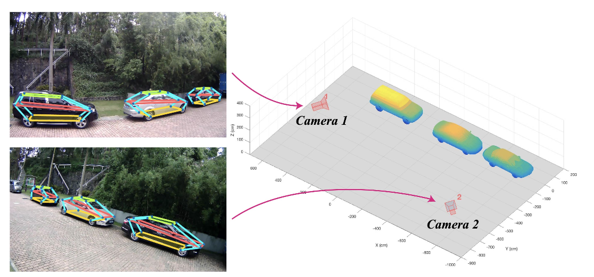
物体のキーポイント検出においてState-of-the-art。6DoF推定手法 (Pavlakos, ICRA17)では12キーポイントの平均誤差が37.88であったが、提案手法では10.48まで低減した。また、回転/並進誤差も3DVP (Xiang+, CVPR15)では11.18/N/Aであったが、2.87/4.73まで向上させた。
End-to-Endでイベント検出（行動の時系列セグメント化）とキャプショニングを実行するタスクを提供する。モデルには3D Convolutionや階層的LSTM（two-level hierarchical LSTM）を採用した。基本的にはDense Captioning Events in Videosをベースにして研究を行なっているが、{Controller, Captioner} LSTMの二段階により前の候補のセンテンスやビデオコンテキストを考慮しつつ状態を更新（Controller LSTM）し、候補領域の特徴を参照しつつキャプションを生成（Captioner LSTM）する。時系列候補領域とキャプションはmulti-task学習、End-to-Endで学習される。
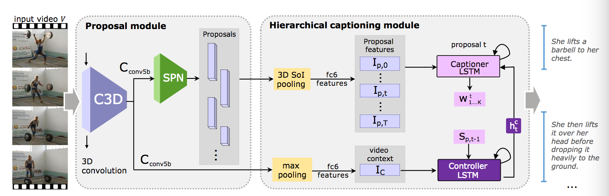
候補領域生成やキャプショニングの精度を検証した。また、データセットにはActivityNet CaptionsやTACoS Datasetを用いた。候補領域については従来法のDAPが30, multi-scale DAPが38 @AUC (IoU>0.8)に対して提案法であるJEDDi-Netは58.21を記録した。また、キャプショニングについては従来法が{17.95, 4.82, 17.29} (各BLEU1, METEOR, CIDEr)の問題に対して{19.97, 8.58, 19.88}を記録した。
動画のタスクはカテゴリのみでなく言語やより表現力豊かな認識ができなければいけない時期になって来た？時系列表現にもまだまだ課題が多いので、これからさらに動画認識にチャレンジすべき。また、キャプショニングの問題は感性評価に対する知見や確固たる評価方法が確立されるとさらに面白くなるのではないか。
AIが写真の感性評価やコメント生成を行なってくれる。写真とそのコメントが対応づけられた大規模DBであるAVA-Reviews dataset（52,118画像、312,708コメント）を学習することで写真を入力して図の(1)Predictionや(2)Commentsのようなものが得られる。モデルはCNNにより感性評価（Low-/High-Aesthetic category）を、CNN+LSTM（RNN）によりコメント（e.g. Fastastic colors）を出力する。
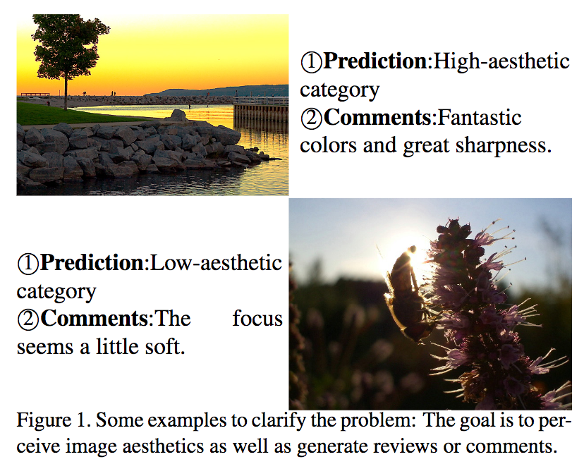
(i) 人間のような画像に対する感性評価（image aesthetics）をコンピュータに実装した。(ii)自然言語の出力により人間の高次な認知能力を実現。(iii) 画像-言語の組み合わせによるデータセットAVA-Reviews datasetを新規に構築した。
深層学習の解釈性に関する論文であり、畳み込み層の特徴マップの応答を外的に解析して対応する反応を可視化。畳み込みの各フィルタが異なる部位（e.g. 馬の耳や目）に反応するので、グラフにより解析して元画像の対象位置にアクセス。
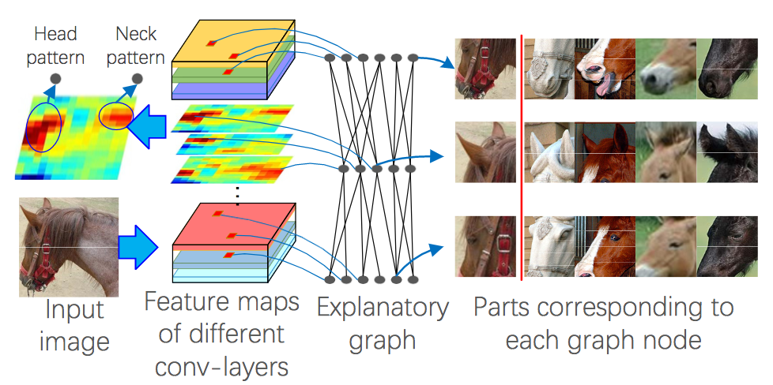
Ground-truthなしに各部位に関する解釈性を与えたことが新規性である。図に示すように入力画像に対するパーツごとの解析をフィルタの反応やグラフの解析から可視化することができる。 さらに、異なる画像間においても一貫性のある反応を得ることができた。
深層学習は教師なしによる解釈性を獲得しているが、まだ反応している部分の可視化や部分ごとの解析が進んでいるにすぎない。さらなる発展のためには、言語的な解釈や人間にわかりやすい加工（イラストとか？）が必要になるのではないだろうか。
スマホカメラを使って非侵襲なヘモグロビン濃度の測定を実現．血中の酸素飽和度の測定などはこれまでにもあったがヘモグロビン濃度まで測定できているものはなかった． 照明条件とRGBの変化からヘモグロビン濃度を推定するためのアルゴリズムを提案．
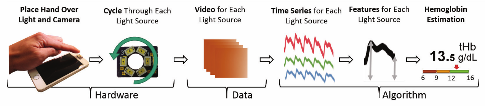
特別な装置を使うことなく簡単にスマホカメラでヘモグロビン濃度測定を実現した点．
システムやユーザスタディの完成度や完全に実現できたときの有用性が評価された？